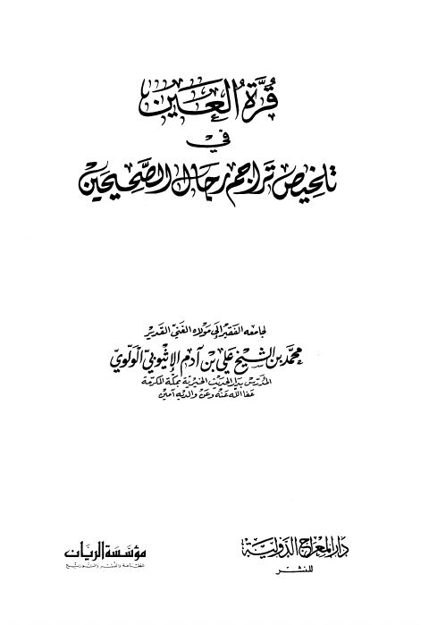

Authors
محمد بن علي بن آدم الأثيوبي
Author ·
d. 1442 AH
Resources

قرة العين في تلخيص تراجم رجال الصحيحين- ط. الريان
قرة العين في تلخيص تراجم رجال الصحيحين- ط. الريان
محمد بن علي آدم الإتيوبي الولوي